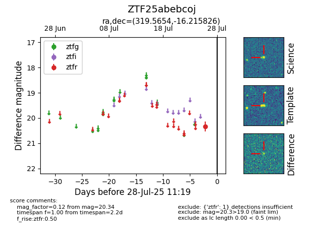

Target ZTF25abebcoj at 2025-07-28 11:19, see:
FINK: fink-portal.org/ZTF25abebcoj
Lasair: lasair-ztf.lsst.ac.uk/objects/ZTF25abebcoj
ALeRCE: alerce.online/object/ZTF25abebcoj
alt names
ZTF25abebcoj (ztf,fink)
coordinates:
equatorial (ra, dec) = (319.5654,-16.21583)
galactic (l, b) = (33.9119,-39.65228)
photometry
last ztfr=20.34
1 ztfr detections
